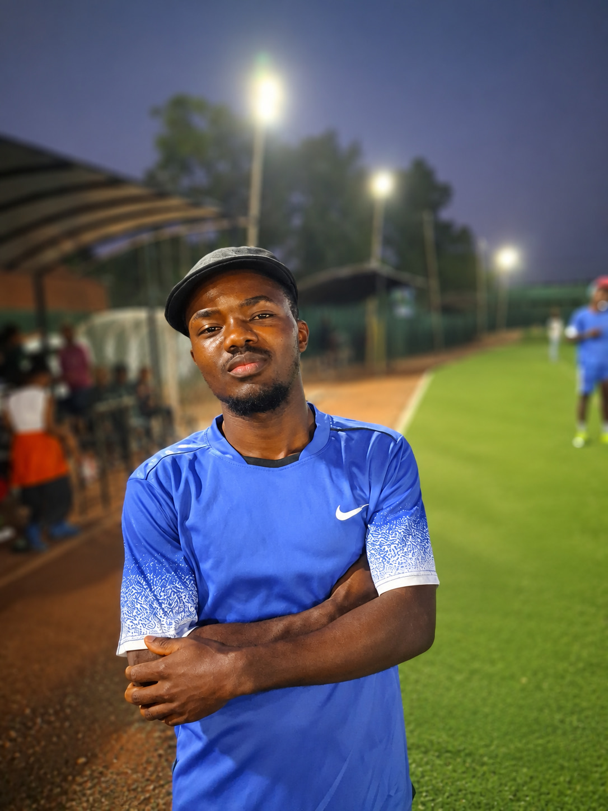
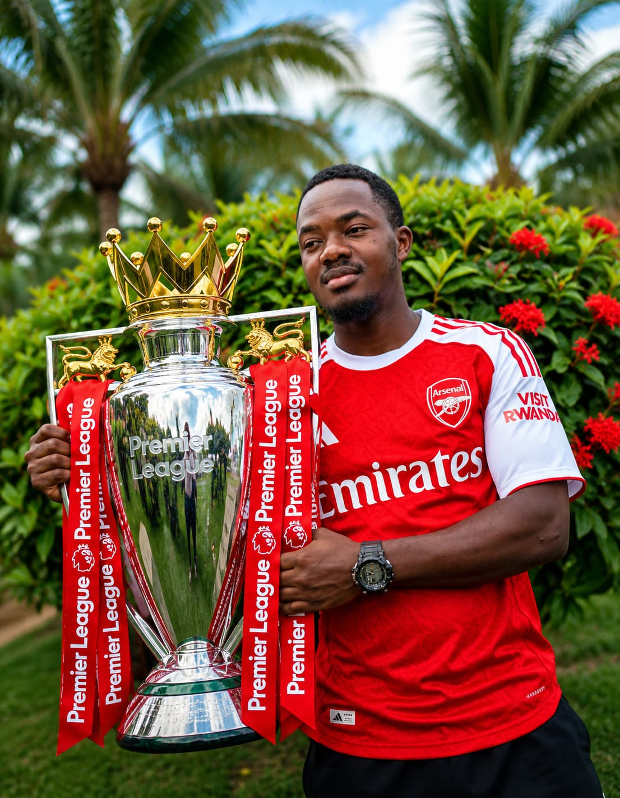

WELCOME, TO MY OFFICIAL WEBSITE
This is my official website to be completely opened
ABOUT ME
My name is Kwezi Mugarra Trevor, and Iam currently a first year student at Muni university pursuing a abachelor's degree in Information Systems. Before joining university, I attended Cambridge college of st.Mbaaga, where I studied from senior one to senior six(2019-2025).My long term goal is to become a software engineer and building real systems that solve everyday problems. Beyond that am working toward becoming a nuero surgeon in my future.MY HOBBIES
Outside my academic world, am passionate about soccer. I love playing soccer whenever I get time. I am an Arsenal fan through every heartful moments, whether wining or losing. Football gives me a healthy balance alondside my academic lifeMY FAVOURITE COURSE MODULES
These are three modules from my Information Systems course that I find most interesting and enjoyable.
| Module Name | Module Code | WHY I LIKE IT |
|---|---|---|
| Web Application Development | ITM 1131 | I love building things I can see and interact with. This module teaches me the skills to create websites and apps |
| Database Management Systems | ITM 1142 | This module covers the principles and practices of database design, implementation, and management. |
| Software Engineering | ITM 1153 | This module introduces software development methodologies, project management, and best practices in software engineering. |
GALLERY
style="color:#4a5b6e; font-size:0.95rem; margin-bottom:0.8rem">These are three modules from my Information Systems course that I find most interesting and enjoyable.

